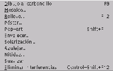
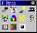

Next: Compatibilidad con el MS
Up: Modificar
Previous: Color
Índice General
Los filtros son modos de modificación de la imagen que pueden basarse en cualquier característica:
los hay artísticos, que simulan tipos de pintura; técnicos que ayudan a enfocar o desenfocar imágenes;
decorativos, para dar más variedad a las imágenes, etc. En Image se pueden aplicar desde el menú Filtro
o desde la barra de herramientas Filtros, si bien desde la barra no se pueden ajustar algunos parámetros
y desde el menú sí. Ambos se muestran a la derecha. Para conocer sus efectos, lo mejor es utilizar una
fotografía e invertir algo de tiempo en ir probando cada filtro.
Figura 5.57:
Menú de filtros
|

|
Figura 5.58:
Barra de filtros
|

|
5.57
5.58
Proyecto Cursos - LuCAS - http://lucas.hispalinux.es/htmls/cursos.html